Extension 4: Module 4
- Extension 1: Create an Instrument:
- Extension 2: Draw a Sound Wave:
- Extension 4: Roving Eyes:
- Extension 6: Roving Eyes; Slow Motion Edition:
- Extension 7: String theory:
Extension 1: Create an Instrument:
We have seen how sound can be represented as a summation of sine waves. In this extension, you will process a description of an instrument, which specifies the relative intensities of that instruments overtones. You will modify a copy of PlayThatTune so that the sound emitted for each note has the profile of the specified instrument.
Warm Up
-
Locate the
instrumentpackage in theextensionsfolder. -
You will find a copy of
PlayThatTunein theinstrumentpackage, credited to Sedgewick’s book, as this code is adpated from Sedgewick’sPlayThatTune. -
Run
PlayThatTuneand verify that it plays the music files correctly.
Overview
- For the purposes of this work, let’s define a frequency factor as a multiplicative factor to be applied to a frequency
f:
In the example below, let’s assume that f is 440 Hz (cycles per second), which is concert A. On a piano, this is the A above middle C:
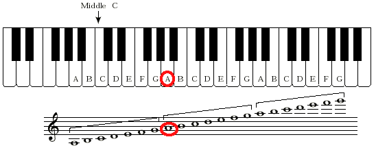
-
a factor of
1results in the same frequency asf, because1*f==f. -
a factor of
2yields a frequency an octave higher thanf.
For this example, we obtain 880 Hz, which is the A above high C on a piano:
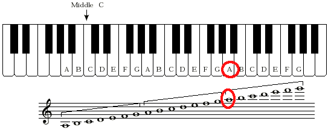
- a factor of
4yields a frequency two octaves higher thanf.
Here we obtain 1760 Hz, an octave above the A above high C:
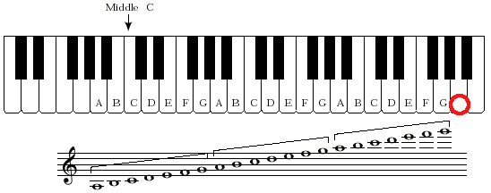
- a factor of
3is between one and two octaves higher, and it turns out to be one octave plus a just (or, pure) fifth above the pitch corresponding tof.
Here we obtain the frequency 1320 Hz, which sounds like the E above high C.
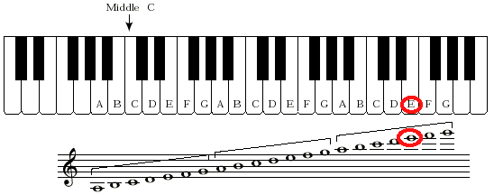
The sound is slightly different than on a piano, where the pitches are not perfect but are instead evenly spaced apart from each other. The corresponding note on the piano has a frequency of 1318.51 Hz, slightly flatter than what we get by our frequency factor.
- a factor of
0.75(ratio of 3:4) yields a note that sounds like an E, but dividing by 4 lowers its pitch by two octaves. Withfat concert A, a frequency factor of 3:4 yields a frequency of 330, whichsounds like the E above middle C:
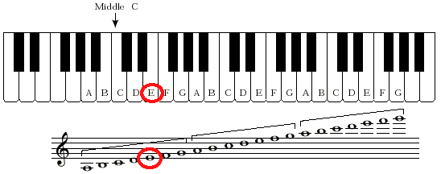
Again, the pitch on a piano is slightly different; in this case it is slightly flatter at 329.63.
-
It is thus convenient to specify a frequency factor as the ratio of two integers. In the above examples we see 1:1, 2:1, 4:1, 3:1, and 3:4.
-
To build an actual instrument, we must pick the frequency factors we wish to hear, and specify how strong each should be. The table below specifies such an instrument:
| Frequency Factor | Relative Strength | |
|---|---|---|
| Numerator | Denominator | |
| 1 | 1 | 1 |
| 2 | 1 | 0.75 |
| 3 | 2 | 0.50 |
The first row is the fundamental frequency. The second is an octave higher, and is 3/4 as strong as the fundamental frequency. The third row specifies a pitch that is a fifth above the fundamental freqnecy, and quieter still at half the strength of the fundamental frequency.
The waveform that results from such an instrument specification is shown below in red, with the three frequency factors shown in black:
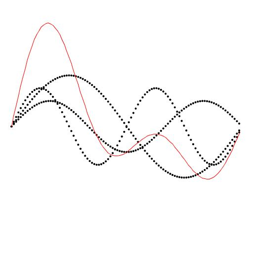
- The red solid waveform is literally the sum of the
. The sound you produce is sampled from the red waveform, and that is the subject of this extension.
-
The plot shown above is not the subject of this extension, but is shown to help explain how complex sounds are built from simple ones, as follows:
-
The black waveform with the largest amplitude (the tallest black waveform) is the fundamental frequency at relative strength 1. The sample shown is for 1/440 of a second of a 440 Hz concert-A. This is sufficient ot show one full cycle of the fundamental frequency.
-
The black waveform with the next largest amplitude has relative strength 0.75. It is an octave higher, so it oscillates twice in the timespan of the fundamental pitch’s waveform.
-
The black waveform of smallest amplitude (at half the strength of the fundamental frequency) is the 3:2 frequency factor, which sounds like a fifth above the fundamental frequency. As expected, it exhibits 1.5 cycles in the timespan of the fundamental pitch’s waveform.
-
-
The sound of the red waveform, which is what you will produce below, is similar to an oboe or a clarinet.
Procedure
-
First prompt the user for how many frequency factors the user wishes to specify. In the above example, 3 such frequencies were used.
-
For each frequency factor, prompt the user for its
-
Numerator (an
int) -
Denominator (an
int) -
Relative strength (a
double)
The information about the frequency factors must be saved (in arrays) for future use.
-
-
The code in
PlayThatTune, copied with attribution fromPlayThatTune, reads in a file and computes a value in a variable calledhzthat is the fundamental frequency of the tune being played.The
hzvalue is computed from concert A (440 Hz), taking the specified number of equally spaced chromatic steps above (or below) concert A.The relevant details, explained in the lecture slides for this module, are not necessary to complete this extension, but please ask if you would like clarification.
-
Your task is to modify the assignment to the sample
a[i]in the provided code: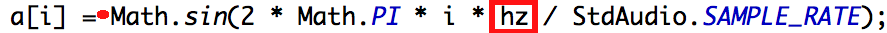
The sine wave sampled and assigned there is for:
-
the fundamental frequency (
hz, shown in the red box) of the desired pitch -
relative strength
1.0(the result of the sine function call is implicitly multiplied by 1, shown at the red dot).
In place of that value, you must compute the sum of sine wave samples, one for each frequency factor, as follows:
-
a[i]is initially zero. -
For each frequency factor
f<sub>k</sub>, add toa[i]a sample obtained as follows:-
The value passed to the sine function must be multiplied by the frequency factor. This means multiplying the red-boxed
hzby the ratio of the numerator and denominator of the frequency factor. -
The value returned from the sine function must be multiplied by the relative strength of the frequency factor. This happens at the red dot.
-
-
-
Test your program on the
A.txtfile first, which is a single note. Then tryAscale.txtand some other songs.
Extension 2: Draw a Sound Wave:
Warm Up
To understand this extension, you should first be familiar with the extension in which an instrument’s sound is produced as the sum of sine waves.
You will modify your program further in this extension to produce the sine-wave plots that depict how sine-wave addition occurs.
The details of this assignment are not completely specified so that you must think through what is needed to produce meaningful plots. Ask for help as needed!
Procedure
- An example of a plot is shown below:
-
The black waveform with the largest amplitude (the tallest black waveform) is the fundamental frequency at relative strength 1. The waves shown are for 1/440 of a second of a 440 Hz concert-A. This is sufficient ot show one full cycle of that fundamental frequency.
-
The black waveform with the next largest amplitude has relative strength 0.75. It is an octave higher, so it oscillates twice in the timespan of the fundamental pitch’s waveform, at 880 Hz.
-
The black waveform of smallest amplitude (at half the strength of the fundamental frequency) is 660 Hz: the 3:2 frequency factor, which sounds like a fifth above the fundamental frequency. As expected, it exhibits 1.5 cycles in the timespan of the fundamental pitch’s waveform.
-
The red waveform is the sum of the black ones.
-
Each of the frequency factors incorporated into an instrument is shown separately by plotting dots of the curve as the values are computed.
-
With frequencies on the order of hundereds or thousands of cycles per second, we must limit the time of the plot so that we can see one or two cycles clearly.
Think about how many samples you need to capture to show one complete cycle at 440 Hz.
One way to reason about this is to use the units of the various computations and multiply or divide them to obtain the property you seek.
-
Plot the individual waveforms using black dots, as shown above.
-
Plot the summation waveform using red connected line segments, as shown above.
Extension 3: Magic 8 Ball:
- Authors
A video demonstrating my solution can be found here
The Magic Eight Ball
is an autoresolution device. A question of boolean type is
posed, the Magic Eight Ball is turned over, and it then displays its advice
in a murky window. It has resurfaced in other guises over the ages, most
recently perhaps as The Magic Conch Shell in the
Club SpongeBob
episode of
SpongeBob SquarePants.
To receive credit for this extension, your implementation of the Magic 8 Ball must:
-
Repeatedly prompt the user for his or her question using
ArgsProcessor. -
Dramatically cause the answer to emerge in a (
StdDraw) display, over a 2-5 second period, as follows:-
Display the result in a triangular shape, such as shown here. (Your solution will be much more dramatic as you include the following.) Your triangle need not rotate.
-
Your rendering must fade the image from black to showing the triangle with text in a continuous manner, as the answer emerges.
-
Your rendering of the answer must cause the text go from blurry to sharp as the answer emerges.
-
Try to have a suitably eerie sound accompany your display. (not necessary for credit, but nice)
-
Extension 4: Roving Eyes:
- Authors
- Ron K. Cytron
- Ken Goldman
A video demonstrating my solution can be found here.
Although the solution can be quite short (mine weighed in at approximately 50 lines), there are some tricky aspects to this work, and it may be an extension that you work on over several weeks.
You will have to interact with the mouse, perhaps for the first time, both in terms of its location and determining whether the mouse has been pressed and released. It will take patience to get this to work, but most students like the end result.
The idea
-
Each time the mouse is clicked, an eyeball is deposited on the image.
-
Each eyeball consists of two parts:
-
An outer filled circle that is white with a thin black border. This part of the eyeball does not move as the mouse moves around the screen.
-
An inner filled circle with of some color (mine are red, below). This part of the eyeball does move, so that the eyeball can appear to be looking at something.
-
-
All eyeballs seem to look at the mouse, wherever the mouse moves within the
StdDrawwindow.
| 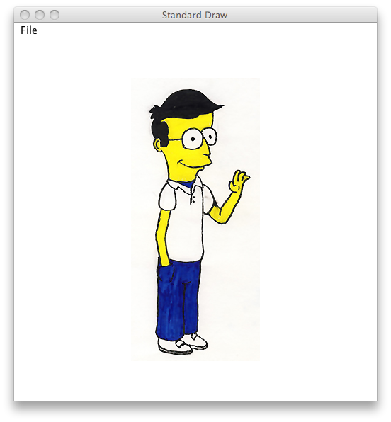 | 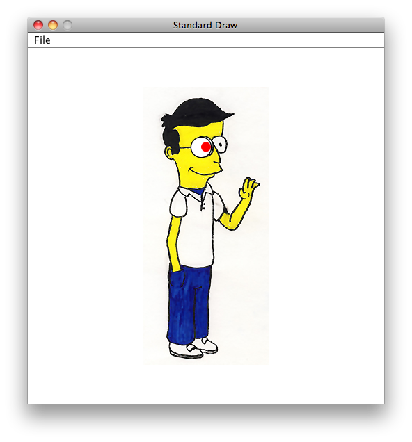 | 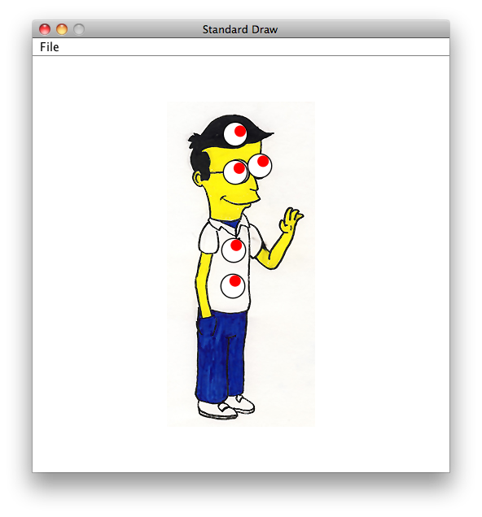 | |
This is the initial image you should draw. The picture can be found as images/ken.jpg in your workspace. |
Here, I have clicked over the image to deposit my first eyeball. The mouse (not shown) is to the right, so the eyeball is looking that way. | Then I clicked a second time to deposit another eyeball, this time over the right eye shown in the image. Both eyeballs are looking at my mouse, which is at the lower right (not shown). | Each time I click the mouse, another eyeball is deposited, and all eyeballs continue looking at my mouse, wherever it happens to be. |
Part 0: Initialize your application
-
Begin by drawing the picture in the image.
-
Prompt the user to specify the maximum number of eyeballs that will be drawn. This information is necessary so that you can appropriately provision arrays needed to implement this extension.
This code is included in your repository. Open the
extensionsfolder in which you will find theeyeballspackage. Open and run theEyeballsclass.
Part 1: Detecting mouse clicks
Most programs that interact with the mouse use a listener model that takes action when the mouse is moved, pressed, released, or clicked (a press and release action).
Unfortunately, in Sedgewick’s API, we can only determine the current status of a mouse button as up or down. We must then use logic and iteration to discover whether a mouse has been pressed, released, or clicked.
This low-level API for the mouse leads to some mixed feelings about how you are learning to interact with the mouse:
-
The code you write will not be typical of how most Java programs interact with the mouse. The reason for this is that your work takes place in an infinite loop, slowed only by the use of
StdDraw.pause(n), which consumes resources on your computer even when you are not moving the mouse. -
You are essentially polling the mouse as to whether it is up or down, and then using your own logic to determine whether it has been pressed, released, clicked, or dragged.
From a pedagogical perspective, you will learn how this kind of processing takes place at a low level on some computers. You also learn how to track the state of an input device over time, and many applications require this kind of logic.
Following is a description of mouse actions as they are typically used in most applications:
- Mouse press
-
We think of this as a single push-down action on a mouse or trackpad. This action usually initiates some activity in applications.
From an application’s point of view, this event happens just once when the mouse is pushed down. Generation of another mouse press action would require the mouse to be released, and then pressed again.
- Mouse release
-
If a mouse has been pressed, then it can be released. Some applications distinguish between the press and release, so that the mouse can move between those actions. This is sometimes called dragging the mouse.
- Mouse click
-
While this is a compound action, consisting of a mouse press followed by a mouse release, it is usually treated as an atomic action that takes place at exactly one coordinate. The release also happens within some reasonable timeframe of the press, if the press and release are to be construed as a click.
The above mouse actions are the logical ones that we wish to implement. Actually, it suffices for this extension to determine only a mouse release, but you are welcome to think about how to discover the other actions.
The Sedgwick API offers only the following interface, which we must use in our application to simulate the above mouse actions.
double mouseX()-
returns the x-coordinate of the mouse, expressed in terms of the coordinates of the
StdDrawcanvas. double mouseY()-
returns the y-coordinate of the mouse, expressed in terms of the coordinates of the
StdDrawcanvas. boolean mousePressed()-
A better name for this would be
boolean isMouseDown(), because this method does not detect a mouse press in the standard view of mouse actions. Instead it simply reports whether the mouse button is currently pressed or not.
Your task is to simulate a mouse-click action using the above API.
This will inevitably involve polling the mouse as to whether the
button is down or up. Consider the following code:
while (!StdDraw.mousePressed()) {
// do nothing,
// we are waiting for the mouse button to go down
//
// The line below is important, as described below
//
StdDraw.show(50);
}
-
Without the pause using
StdDraw.show(50), this application would run in a tight loop that would always keep your computer busy, even if you are not interacting with the application. As a result, all of the other applications open on your computer would suffer from not getting sufficient CPU resources to be reponsive. These applications would appear to behave sluggishly. -
Sedgewick uses the pause intervals to hide updates that you make to the drawing canvas. Between calls to show, no updates are shown. At the call to show, the screen is redrawn, and the CPU is released for the specified period of time (50 milliseconds in the above code).
Make sure your eyeballs are depositing properly as you mouse-click before you move on to implement more features.
Part 2: Following the mouse movement
A pupil within an eyeball tracks objects using the geometry of similar triangles. The following diagram and discussion may be useful.
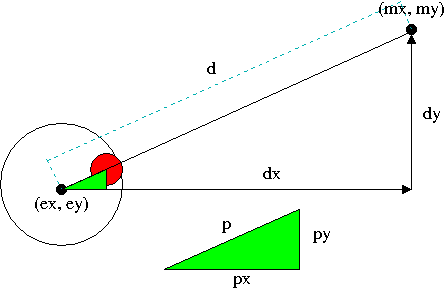
-
The eyeball is centered at
(ex,ey)and is looking at the object (the mouse) at(mx,my).
This leads to the following equations:mx = ex + dxmy = ey + dy
-
Knowing
(ex,ey)and(mx,my), we can solve for ` dxanddy`. -
Knowing
dxand ` dy, we can computed` using the distance formula. -
We know
p, because it is the radius of the eyeball minus the radius of the pupil. This may be hard to see, but convince yourself of this by looking carefully at the figure. -
The green triangle is similar to the large triangle.
-
Knowing ` p ` and
d, we can compute their ratio. -
That same ratio describes
px:dxpy:dy. -
From those ratios we can compute ` px
andpy`. -
Knowing
(ex,ey),px, andpy, we can compute the center of the red pupil as(ex+px,ey+py).
Putting it all together
Your code is like the bouncing ball code, in that it enacts a sequence of frames. Each frame consists of checking whether and where a new eyeball should be deposited. Moreover, all existing eyeballs must be updated so that they appear to be tracking the mouse as it moves through the window.
Give yourself time for this extension, and develop and test the aspects in the order described above.
Extension 6: Roving Eyes; Slow Motion Edition:
- Authors
- Ken Goldman
We suggest that you wait until you have completed module 5 to do this extension, as the information in module 5 will help.
Your task is simple: slow down the way that the eyes move from the previous extension. They should still follow the mouse, but it should take some time for the eyes to arrive at their final position.
You are not allowed to do this by slowing the simulation down. Instead, you must smoothly vary where the eyes should look in the normal speed of the simulation.
Extension 7: String theory:
- Authors
Overview
The purpose of this assignment is to give you the skills to index and analyze Strings in order to prepare for
different web scraping tasks. Once you are able to extract information of interest from a target String, you
will be ready to query a webpage, save the raw HTML code, and extract relevant information.
For this assignment, you are working on simple arithmetic expressions as Strings. Your task is to extract the
two integer values and the arithmetic operator from the String and save them as variables of their respective
type. You will then compute and print the value of the expression.
Example
Given: String s = "21 + 33";
You must extract 21 and 33 to int variables and + to a char or
String variable. Then you will compute and print the expression 21 + 33 = 54
Procedure
As previously mentioned, the purpose of this assignment is to prepare you for dynamic web scraping tasks. As
such, it is expected that you implement this assignment dynamically. In other words, the only assumption you should have
about the String you are analyzing is that it will be in the format (Positive Integer)(Arithmetic Operator)
(Positive Integer). This implies your implementation should be able to run effectively on an expression containing
positive integers of any length. It should also be able to effectively extract any arithmetic operator (+, -, *, /) and
print the proper answer. Lastly, your code should be able to deal with possible spaces in the String.
It is important to note that there are many acceptable ways to implement this assignment. It is up to your discretion which way you choose to implement the procedure as long as it abides by the requirements described above.
- Listed below are several helpful methods for this assignment. The first is from the
Stringclass and is called on the targetString t. The other four are static methods. Recall that static methods are not called on a target variable as in the previous method, but rather are called on a generic object of that type.
- char charAt(int i)
-
Returns the character at index
iint. - boolean Character.isDigit(char c)
-
Returns true if
cis a digit and false otherwise. - boolean Character.isWhitespace(char c)
-
Returns true if
cis white space. - String Character.toString(char c)
-
Returns the
Stringrepresentation of a character. - int Integer.parseInt(String s)
-
Returns the
intrepresentation of a String.
-
Begin by extracting the first integer value from the
Stringusing the methods described above. Keep in mind that the integer can be multiple digits. You might be extracting 2 or 274539. -
Implement a similar approach for the operator and second integer.
-
Now that you have the two integers in
intvariables and the operator in acharorStringvariable, perform and print the simple arithmetic operation.